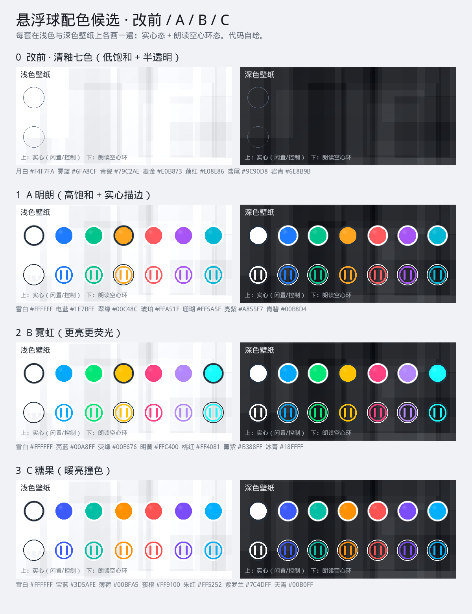
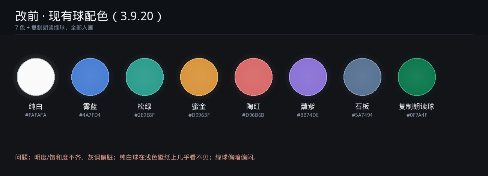
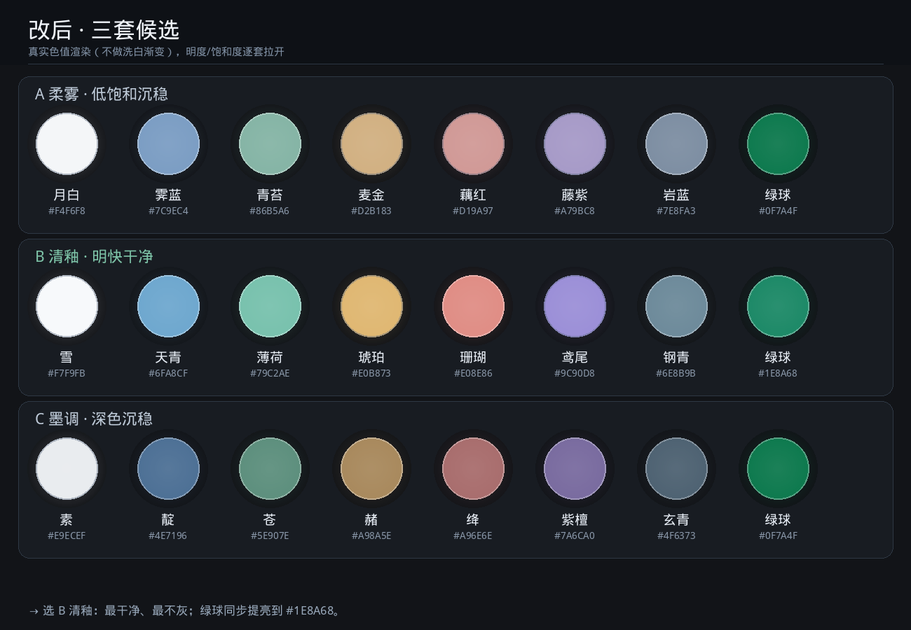
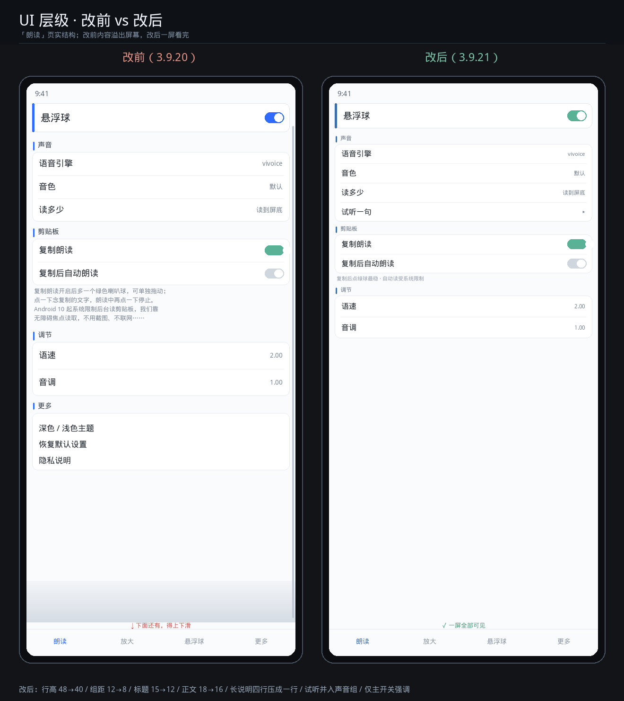
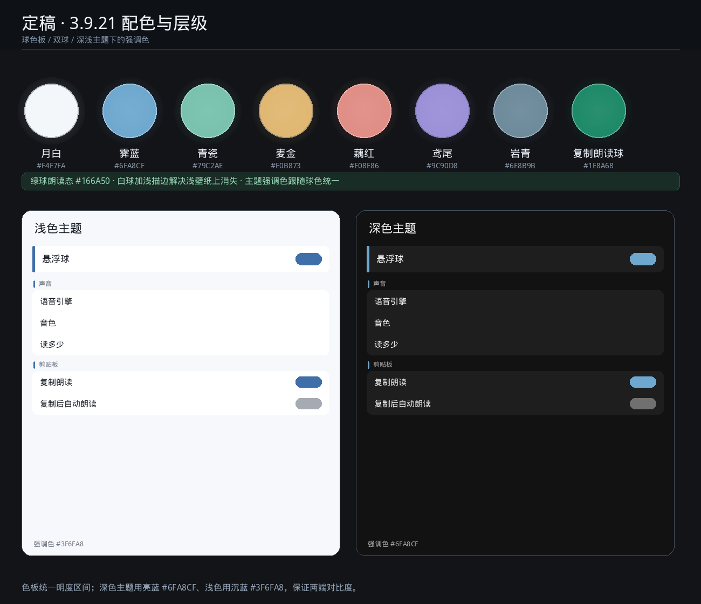

3.9.23 · 球色与不透明度：改前 / 候选 / 改后
代码自绘预览，不是真机截图。改前那排在浅色壁纸上几乎看不见，正是「不醒目」的根因；不透明度调到 100% 仍半透明则是径向渐变写死的。


一个常驻屏幕边上的小球，把「看不清」和「不想看」两件事，收进两个动作里。给还看得见、但看得很吃力的人。
当前版本 3.9.23 · Android 7.0+ · 装完开一次无障碍即可 · 新版可直接覆盖安装
球会用自己的样子告诉你它现在在干什么：空心是待命，实心是准备选字，两竖线是正在读，转圈是正在准备。
中间是透明的，不挡底下的字。按住它 → 画面放大，手指挪到哪看到哪，松手还原。
点一下球变实心。这时候点屏幕上想听的那段字，就从这句开始念。
等待出声时球里一排小点会转圈，不会让你呆等。再点一下球就停。
把「实时放大」和「点哪读哪」做进同一个悬浮球、同一套手势、同一个无障碍服务的，我们目前没有找到同类开源项目。常见方案各自只解决一半。
| 方案 | 放大 | 点哪读哪 | 朗读 | 要学手势 | 联网 / OCR |
|---|---|---|---|---|---|
| 系统放大 / 放大镜 App | ✅ | ❌ | ❌ | 部分 | 否 |
| Select to Speak / TalkBack | ❌ | 部分 | ✅ | 要学 | 否 |
| OCR 选区朗读类 | ❌ | ✅ | ✅ | 要框选 | 截图 + OCR |
| 剪贴板朗读类 | ❌ | 先复制 | ✅ | 否 | 否 |
| 看得清 | ✅ | ✅ | ✅ | 两个动作 | 都不需要 |
刻意只走 Android 官方无障碍树：不截图、不做 OCR、不引入模型。换来点一下就出声、零网络权限；代价是图片里和游戏自绘的字读不到。这是选的路，不是没修完。
不是「我们承诺不上传」，是这个 App 根本没申请上网权限。
Hold to magnify the screen and follow your finger; tap the ball, then tap any text to hear it read aloud from that sentence. No internet permission, no OCR, no account, no gestures to memorize — only the official Android accessibility tree. Built for people who can still see, but strain to read.
「新建订阅（RSS 2.0 / Atom / JSON Feed）」框要的是 feed 文档； 「新建下载任务」框要的是 APK 文件直链。两者不是同一个东西。
或 JSON Feed：https://cdn.jsdelivr.net/gh/zjh1934/kandeqing@main/docs/feed.json
实测返回 application/atom+xml / application/json。
里面有全部历史版本（球球 2.0 → 当前版本，逐版一条），最新在最前，
每条附件直指该版本的真 APK，带大小与 SHA256；CI 每次发版追加一条，
旧版本不删。只想永远拿最新，用下面②的固定直链。
旧路径 docs/subscribe.atom 内容相同，但 CDN 缓存可能还停在早期
「只有 1 个包」的版本，订阅请用上面的 docs/feed.atom。
CDN 缓存：jsDelivr 对同名文件有几小时缓存，发版后列表可能晚一点才多一条；
CI 每次发版会主动清缓存。想立刻拿最新，用无缓存的 Pages 备用订阅
https://zjh1934.github.io/kandeqing/feed.atom。
别填 GitHub 自带的 https://github.com/zjh1934/kandeqing/releases.atom：它的条目链接是 Release 网页
（text/html），下载器会报「server returned HTML page」。
实测已是 3.9.23，不重定向、链接永不变。要指定版本最稳的是从上面订阅里选
对应条目——每条走版本化路径，不受 CDN 缓存影响。
jsDelivr 备用：https://cdn.jsdelivr.net/gh/zjh1934/kandeqing@main/apk/kandeqing-latest.apk（同名文件在边缘可能滞后一版）
Pages 托管备用：https://zjh1934.github.io/kandeqing/kandeqing-latest.apk
Obtainium 类 App 填仓库 https://github.com/zjh1934/kandeqing，让它自己解析资产。
代码自绘预览，不是真机截图。改前那排在浅色壁纸上几乎看不见，正是「不醒目」的根因；不透明度调到 100% 仍半透明则是径向渐变写死的。

仓库里有一份随 Git 受管的认知索引（aoci.txt / aoci.meta.txt /
aoci.code.txt / AGENTS.md / .aoci/）。
它不进安装包，但记录每个源码文件的职责、强关系与「推不出、删了就会改错」的硬约束；
源码 SHA-256 基线会在自检里检测漂移。详见
docs/aoci.md。
代码自绘预览，不是真机截图。逐张看过、不合适的地方改了两轮才定稿。



